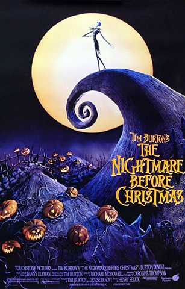

- Director: Henry Selick
- Producción: Tim Burton
- Guión: Caroline Thompson
- Música: Danny Elfman
- Presupuesto: $30.000.000
- Año: 1993
- Género: Fantasía, musical
- Duración: 73 minutos
- País: Estados Unidos
- Productora: Touchstone Pictures
En la ciudad de Halloween se celebra la gran fiesta de Halloween, en la que todo resulta horripilante, es decir, un éxito, por el que todos felicitan a su organizador, Jack Skellington, el "Rey Calabaza".
Pero a pesar del éxito Jack no es feliz. Siente que su trabajo se ha vuelto rutinario, dedicándose año tras año a lo mismo, sintiéndose cansado de hacer siempre el mal, escuchándole mientras se lamenta en el cementerio, Sally, una muñeca de trapo creada por el Dr. Flinkenstein y hecha de trozos de varios cuerpos de distintas mujeres, que está enamorada de él.
Paseando con Zero, su perro fantasma se adentra en el bosque hasta llegar a un lugar en que descubre un grupo de árboles con puertas que representan las diversas festividades, llamando su atención el que representa la Navidad.
La curiosidad le impulsa a abrir la puerta, siendo absorbido y cayendo hasta la Ciudad de la Navidad, un mundo desconocido para él hasta entonces, lleno de luces y de color y donde los niños son felices y sonríen mientras se tiran bolas de nieve, no habiendo ni brujas ni fantasmas que asusten a los niños.
Vuelve muy excitado a la ciudad de Halloween donde todos lo buscaban alarmados y nerviosos porque solo quedan 364 días para Halloween y tienen que prepararlo.
Jack trata inútilmente de explicar a sus convecinos lo que ha visto, aunque sin éxito, y como se trajo algunos elementos de la Ciudad de la Navidad trata de analizarlos, y finalmente decide que él se hará cargo de la Navidad ese año.
Entretanto Sally trata de librarse del Dr. Finkelstein dándole sopas con narcóticos, aunque eso solo le supone constantes castigos y encierros, aunque siempre logra escapar.
Todos los vecinos se aprestan a ayudarle, incluida Sally, que le hace un traje de Santa Claus, haciendo el Dr. Flinkenstein que varios esqueletos de reno tomen vida, mientras que el resto de los ciudadanos fabrican los regalos.
Tras ello encarga a tres chavales, Lock, Shock y Barrel que secuestren a Santa "Clavos", y, aunque por un error a quien traen es al conejo de pascua, finalmente secuestran a Santa Claus, aunque, enterado de ello Oogie Boogie se lo arrebata.
Todo está a punto de fracasar debido a la niebla, aunque la nariz luminosa de Zero le permitirá salir a repartir sus regalos desde su trineo-ataúd a los niños, no siendo consciente de que los regalos creados por los ciudadanos de Halloween aterrorizan a los niños, siendo declarada cancelada la Navidad por la falta de Santa Claus, dándose cuenta Jack de su error demasiado tarde, cuando su trineo es derribado por el ejército, aunque pese a todo se muestra feliz de haberlo intentado.
En la ciudad de Halloween, entretanto, Sally intenta liberar a Santa Claus para que lo arregle todo, siendo ella misma secuestrada por Oogie Boogie.
Jack oye sus gritos y acude a su rescate y al de Santa, consiguiendo acabar con Oogie Boogie, que, al deshacerse se muestra como un saco compuesto por cientos de gusanos.
Liberado Santa Claus todos los niños volverán a estar felices al recibir sus regalos, haciéndoles un regalo muy especial a los habitantes de Halloween, la nieve, con la que todos jugarán felices, comprendiendo el espíritu de la Navidad.
Mientras tanto Jack ha descubierto el amor de Sally, y se da cuenta de que también él está enamorado y se besarán felices.
